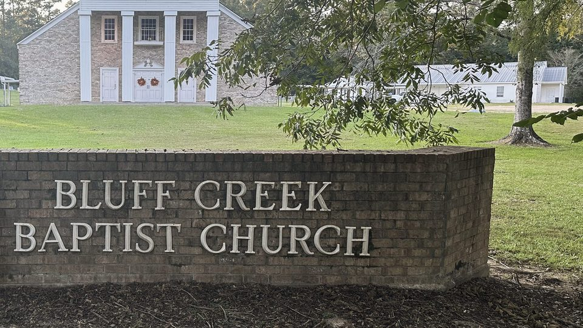

Sunday School
9:00a · Fellowship Building
A country church · Clinton, Louisiana
Rooted in the Word. Growing together.
A church family with room for yours.
Come as you are. We mean it.
This is Bluff Creek
We exist to glorify God
and enjoy Him forever.
We’re a traditional Southern Baptist church on Highway 63. You’ll hear hymns with deep roots, prayer from the heart, and preaching straight from Scripture. And after the service? We’ll probably still be talking.
Get to know usLife together

Big or small, your kids are welcome here. A loving place to learn God’s Word.
Meet Kidz @ the Creek 6th through 12th gradeGood friends. Honest questions. Faith that grows through the week.
Meet Youth @ the Creek Every age. Every season.Find your Sunday School class, open the Bible, and walk through life together.
Meet Adults @ the CreekGather with us
Make a little room
for life together.
9:00a · Fellowship Building
10:15a · Sanctuary
5:30p · Fellowship Building
Worship @ the Creek
Theologically rich hymns. Time in prayer. A word for the kids. A message that opens the Bible and walks through the text.
Sunday worship · 10:15a
Watch with usWhat we believeFirst stop on the 63
A few things to know.
A warm welcome when you get here.
Use either parking lot at the corner of Highways 959 and 63. Head to the fellowship building for Sunday School at 9:00a, or the sanctuary for worship at 10:15a.
Your kids are welcome in worship. We also have a nursery during Sunday School and both Sunday services. Use it as much or as little as you like.
Jeans, boots, or Sunday best—you’ll fit right in. Comfortable is what matters.
Hymns, prayer, a special word for the children, and a 30–40 minute message straight from Scripture. We’re a traditional Southern Baptist church, and we’d love to meet you.
A note from our pastor
Suit or Wranglers, overalls off the tractor or camo off the stand—you’ll fit right in. Bring your kids into the service or use the nursery; either way, you’re welcome here.
I’d love to sit across a table from you with a cup of coffee and hear your story.
— Cole Permenter, Pastor
